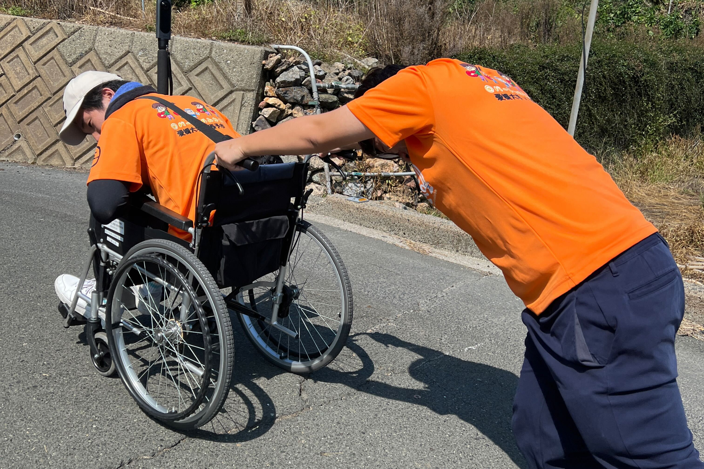
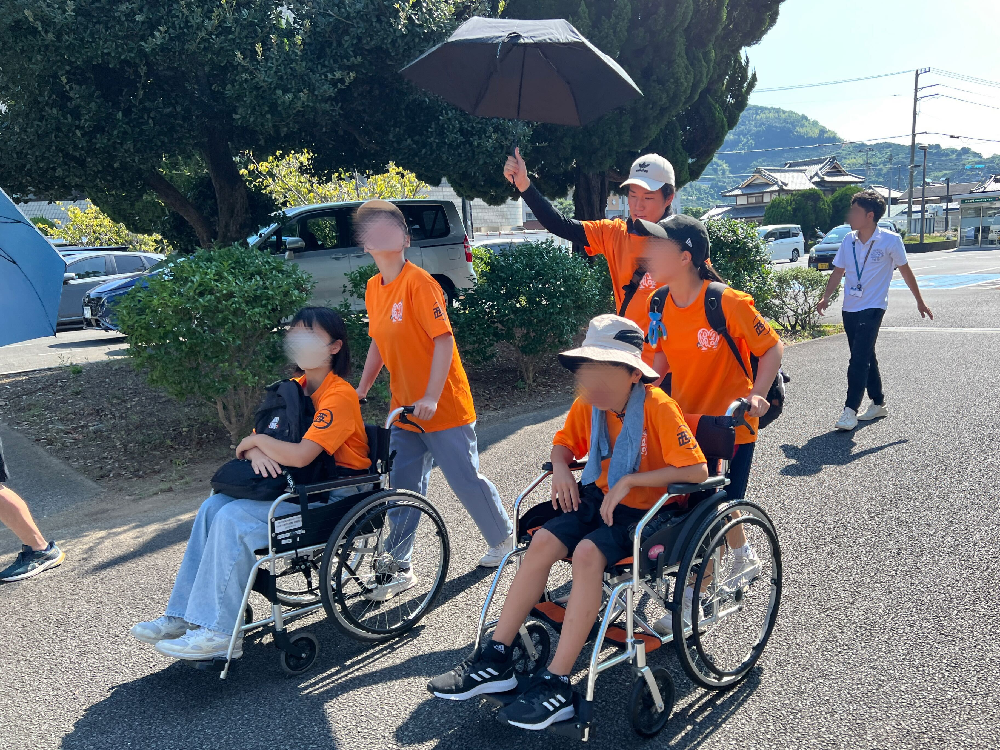

mizukan
イベント
車いす避難体験
9月16日(火)に車いす避難体験を行いました。
有志中学生とともに老人保健施設から避難場所である、
みかん山の中腹まで人が乗った車いすを実際に押して避難しました。

グレーチングに前輪が挟まったり、道の端の大きな穴にはまりそうになったり、
重さに苦労したりなどしていました。

この体験を通じて支援が必要な方に対してどのような支援が必要であるのか、
支援者が担う役割の重要性と課題を体験できたようでした。
文責 前田